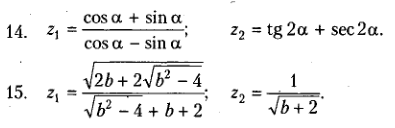

Теоретическая часть
- Понятие о скриптовых языках, интерпретация скрипта браузером
- Варианты применения JavaScript – серверная сторона, клиентская сторона, десктоп, администрирование Windows
- Подключение кода JavaScript к странице
- Простейший вывод в страницу, интерполяция вывода в JavaScript
- Консоль инструментов разработчика браузера, вывод в консоль
- Диалоговые окна JavaScript
- Объявление переменных, констант в JavaScript
- Основные операторы JavaScript – арифметические, логические
- Типы данных в JavaScript
- Реакция JavaScript на ошибку времени исполнения
- Использование объекта Math, некоторые константы и методы объекта Math
- Управляющие операторы JavaScript – ветвление if, else, switch, case, break, default
- Операторы циклов в JavaScript, ключевые слова while, do, for, break, continue
- Синтаксис циклов в JavaScript, вложенные циклы
- Область видимости переменных в циклах
- Использование меток для переходов из циклов в операторах continue метка, break метка
- Функции в JavaScript – ключевые слова function, return, объявление функции, вызов функции
- Параметры функции, параметры по умолчанию – старый стиль и стиль ES6+
- Псевдомассив параметров arguments, функции с переменным числом параметров
Практическая часть
Разработайте функции JavaScript для решения следующих задач из сборника Павловской Т.А., Абрамяна М.Э. Скрипты должны выполняться по мере загрузки страницы, не используйте формы ввода, слушатели событий страниц, анимацию интерфейса при помощи JavaScript – сконцентрируйтесь на изученных вопросах. Формируйте исходные данные при помощи генератора случайных чисел или задавайте присваиванием.
Выводите результаты работы скрипта в разметку при помощи метода document.write(), используйте стилизацию, навигацию по страницам. Каждая задача должна размещаться на собственной странице и иметь навигацию на все остальные страницы, на главной странице разместите задание на разработку и навигацию по страницам задач.
Задача 1. Выполните вычисления с тремя парами исходных данных, не использовать функции
Задача 2. Проверить работу на трех наборах исходных данных, не использовать функции
- If17. Даны три числовые переменные: A, B, C. Если их значения упорядочены по возрастанию или убыванию, то удвоить их; в противном случае заменить значение каждой переменной на противоположное. Вывести новые значения переменных A, B, C.
- If30. Дано число, лежащее в диапазоне -999, …, 999. Вывести его строку-описание вида «положительное двузначное число», «отрицательное трехзначное число» и т.д.
Задача 3. Проверить работу на трех наборах данных, не использовать функции
- Case9. Даны два целых числа: D (день) и M (месяц), определяющие правильную дату невисокосного года. Вывести значения D и M для даты, следующей за указанной.
- Case16. Дано целое число в диапазоне 20–69, определяющее возраст (в годах). Вывести строку-описание указанного возраста, обеспечив правильное согласование числа со словом «год», например: 20 — «двадцать лет», 32 —«тридцать два года», 41 — «сорок один год».
Дополнение
Запись занятия можно скачать по этой ссылке. Материалы занятия в этом же архиве.